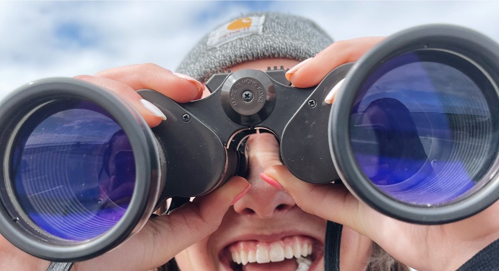
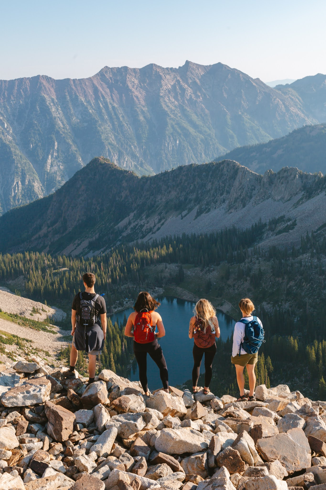
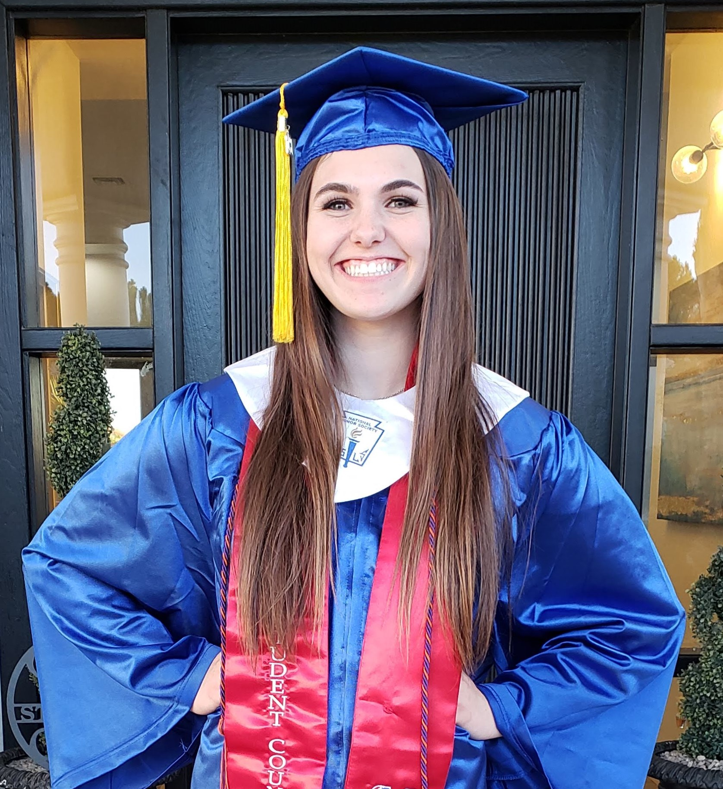
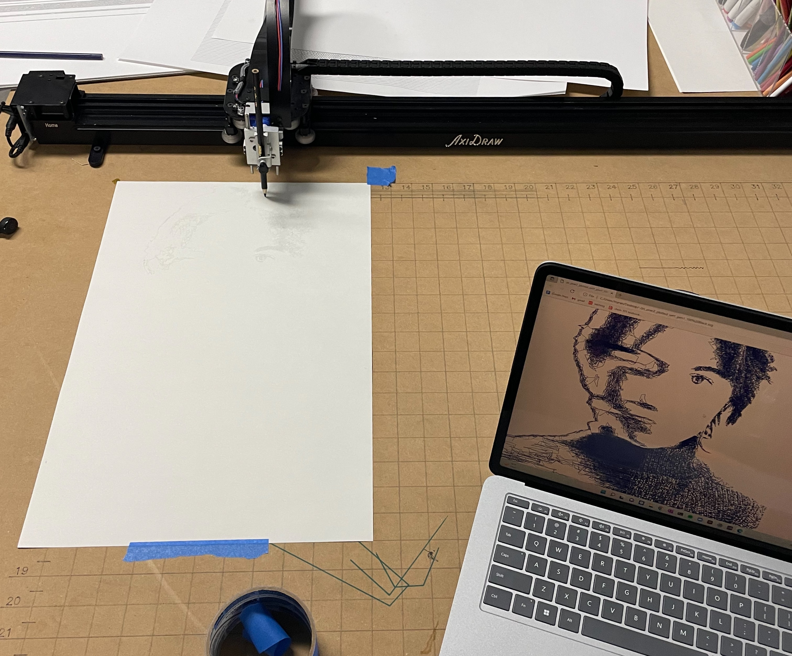

Hi, I'm Myra! Writing a bio page is tricky... how do I sum myself up in a finite set of words?
What is the first sentence of that set of words? Will that sentence contain the information I'm
most proud of, or is it just the stuff other people care about? Who am I anyway? Am I my beliefs?
Am I a product of my environment? Am I a collection of my experiences?

I'll start off with the information you would typically expect to find in a bio
page. You know, the types of things you would say when introducing yourself on the first day of
classes. My name is Myra, and I'm 21 years old. I lived in Arizona for most of my life but have
come to call Utah, New Jersey, and California my second, third, and fourth homes. My hobbies
include hiking, journaling, listening to music, reading, and roadtripping.

As far as my education goes, I graduated high school in May of 2019 and started my studies at
Princeton that following July. At the end of my 5th semester, I withdrew from my classes and
returned to Arizona to take a much-needed break from school. From December to May, I took care of
my mental and physical health, transcribed over 1000 pages of my old journals, and substitute
taught at my high school. During my time away from Princeton, I realized that my love for
programming had surpassed my fascination with the inner workings of the universe, and I
consequently changed my major from astrophysics to computer science. In the summer of 2022, I
took classes at Brigham Young University and returned to Princeton in the fall.

In this past semester of school, I made new friends that had monumental impacts on my life
trajectory. One friend is an art major that asked me what my relationship was with art. I
responded with, "I don't know... minimal?" As we continued talking, she pointed out my artistic
qualities, and I remembered the many self-motivated art projects I did as a kid. I realized that
my creative side was forced into hibernation as I sought academic validation in STEM fields.
Thankfully, I've found that there is a beautiful intersection of art and science and have
rekindled my artistic side. In the last few months, I've allowed myself the space and time to
draw, paint, write poetry and short stories, take photos, make edits in photoshop, and try my
hand at web development.

When I'm not sitting at my desk, I absolutely love to travel and be outside. In high school, I
went on school-sponsored trips to Spain, Italy, Peru, Ecuador, Costa Rica, and Nicaragua. In
college, I've gone on a handful of roadtrips, the details of which can be found in the "Projects"
section of this site. I love hiking and have linked my AllTrails profile to the Connect page of
this site.

I would be totally remiss to conclude my bio page without mentioning my family. I love them so
incredibly much, and each one of them has had an immeasurable impact on my life. My mom and dad
are some of my biggest role models, and my two younger sisters are my best friends. They support
and love me through everything, and I appreciate them so much.